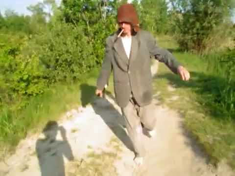
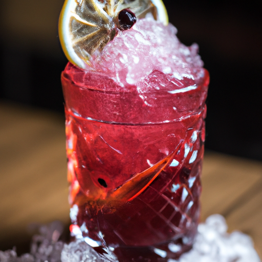
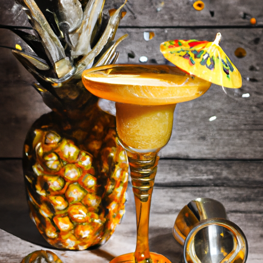

Ajgor
Ajgor to osoba o wielkim sercu, zawsze gotowa pomóc innym.

Komornik
Komornik jest znany z niekończących się opowieści przy kieliszku.
Kobyłka
Kobyłka to mistrz kieliszka i król wszystkich imprez w Skalbmierzu. Zawsze ma pod ręką coś mocniejszego, a jego anegdoty przy kieliszku są legendarne!
Przepisy na drinki

Drink Ajgor's Special
Składniki: 50ml wódki, 20ml soku z cytryny, 10ml syropu cukrowego, lód. Wymieszać i podawać schłodzone.

Komornik's Delight
Składniki: 40ml rumu, 30ml soku ananasowego, 10ml soku z limonki, lód. Wstrząsnąć i podawać z kawałkiem ananasa.
Quiz: Jak dobrze znasz alkoholików z Skalbmierza?
1. Kto jest znany z niekończących się opowieści przy kieliszku?
2. Kto jest mistrzem kieliszka i królem wszystkich imprez w Skalbmierzu?
3. Kto jest znany z wielkiego serca i zawsze gotowy pomóc innym?
Komentarze
Dodaj swój komentarz